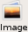

You can insert GIF, JPEG, BMP, and PNG (Portable Network Graphics)
images into your web page. You can also use them to create links. When you insert an
image, KompoZer saves a reference to the image in your
page.
Note: If you plan to publish your pages to the
web, it's best not to use BMP images in your pages.
Tip: It's best to first save or publish your page
before you insert images into it. This allows KompoZer to
automatically use relative references to images once you insert
them.
To insert an image:
Click to place the insertion point where you want the image
to appear.
Click the Image button  on the toolbar, or open the Insert menu and
choose Image. You see the Image Properties dialog box.
Type the location and filename of the image file, or click Choose
File to search for an image file on your hard drive or network.
Type a simple description of your image as the alternate text that
will appear in text-only browsers (as well as other browsers)
when an image is loading or when image loading is disabled.
Alternatively, you can choose not to include alternate text.
If needed, click other tabs so you can adjust the settings (for
example, alignment) in the Image
Properties dialog box.
Tip: To quickly insert an image: Drag and drop it
onto your page.
Tip: To insert a line break after all images in a
paragraph, choose Break Below Images from the Insert menu.
Once you've inserted an image into your page, you can edit its
properties and customize
the layout in your page, such as the height, width, spacing, and
text alignment. If you
are not currently viewing the Image Properties dialog box, follow
these steps:
To edit the properties for a selected image:
Double-click the image, or select it and click the Image button
on
the toolbar
to display the Image Properties dialog box.
Click the Location tab to edit these properties:
Image Location: Type the filename and
location of the image file. Click
Choose File to search for an image file on your hard drive
or network.
URL is relative to page location: If checked,
KompoZer converts the URL to
be relative to the page's location. This is especially
useful if you plan to publish
your pages on a web server so that others can view
them. Using relative URLs allows
you to keep all your linked files in the same place relative
to each other, regardless
of their location on your hard disk or a web server.
Unchecking this box causes KompoZer to convert the
URL to a full (absolute) URL.
You typically use absolute URLs when linking to images on
other web servers
(not stored locally on your hard disk).
If you have never saved or published the page, you must first
save the page in
order to enable this checkbox. (This checkbox is not
available if you open the Image
Properties dialog box in a message compose
window.)
Alternate Text: Enter text that will display
in place of the original image;
for example, a caption or a brief description of the
image. It's a good practice to
specify alternate text for readers who use text-only web
browsers or who have image
loading turned off.
Don't use alternate text: Choose this option
if the image does not
require alternate text or if you don't want to include
it.
Click the Dimensions tab to edit these properties:
Actual Size: Select this option to undo any
changes you've made to the
dimensions and return the image to its original size.
Custom Size: Select this option and specify
the new height and width, in
pixels or as a percentage. This setting doesn't affect the
original image file,
just the image inserted in your page.
Constrain: If you change the image size,
it's a good idea to select this
in order to maintain the image's aspect ratio (so that it
doesn't appear distorted).
If you choose this option, then you only need to
change the height or width, but not
both.
Click the Appearance Tab to edit these properties:
Spacing: Specify the amount of space
surrounding the image; between the
image and adjoining text. You can also put a solid black
border around the image
and specify its width in pixels. Specify zero for no
border.
Align Text to Image: If you've placed your
image next to any text, select
an alignment icon to indicate how you want text positioned
relative to the image.
Image Map: Click Remove to remove any image
map settings.
Click the Link tab to edit these properties:
Enter a web page location: If you want to
define a link for this image,
enter the URL of a remote or local page, or select a named
anchor or heading from
the drop-down list. Click Choose File to search for an
image file on your hard
drive or network.
URL is relative to page location: If
checked, KompoZer converts the URL to
be relative to the page's location. This is especially
useful if you plan to publish
your pages to a web server so that others can view
them. Using relative URLs allows
you to keep all your linked files in the same place
relative to each other,
regardless of their location on your hard disk or a
web server.
Unchecking this box causes KompoZer to convert the
URL to a full (absolute) URL.
You typically use absolute URLs when linking to
images on other web servers (not
stored locally on your hard disk).
If you have unsaved changes, you must first save the page
in order to enable this
checkbox. (This checkbox is not available if you
open the Image Properties dialog
box in a message compose window.)
Show border around linked image: If
checked, displays the link
highlight color around the image.
To apply additional attributes or JavaScript events, click
Advanced Edit to display
the Advanced
Property Editor.